Postdoctoral Researchers
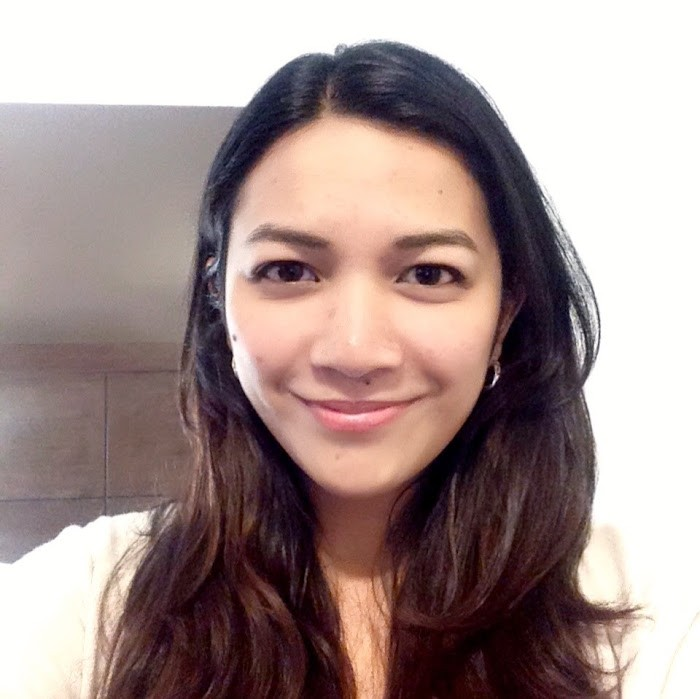
Dr Anne Villacastin postdoc, JBEI/LBNL
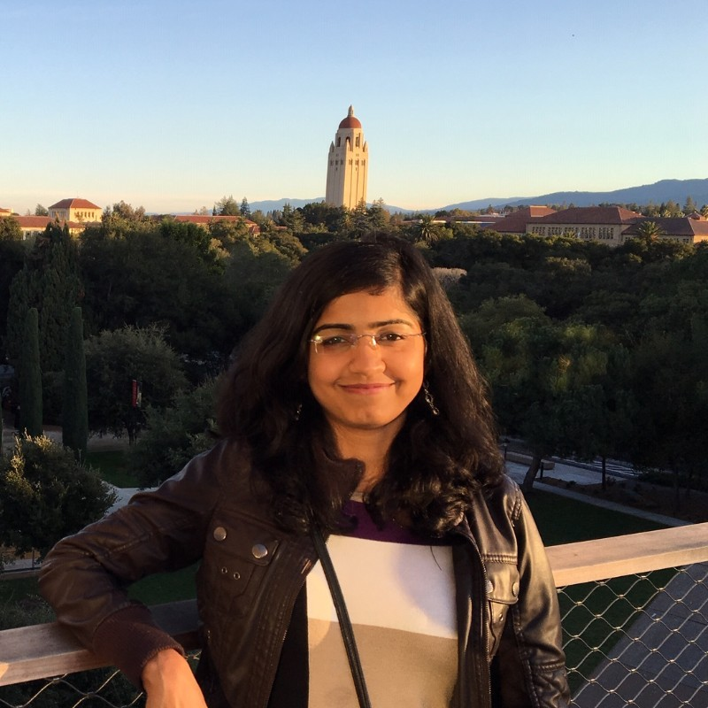
Dr Shweta Priya postdoc, mCAFEs (co-supervised with Dr Aindrila Mukhopadhyay, LBNL)
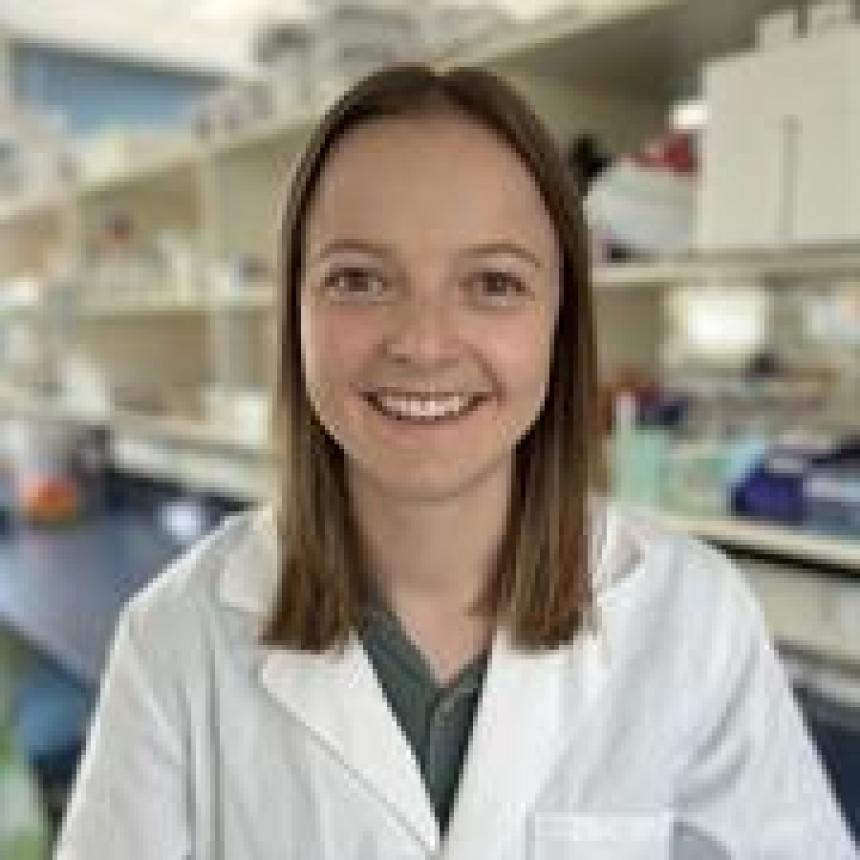
Dr Alison (Ali) Gill postdoc, P4S and LEAF
LinkedIn · X · website · AU profile
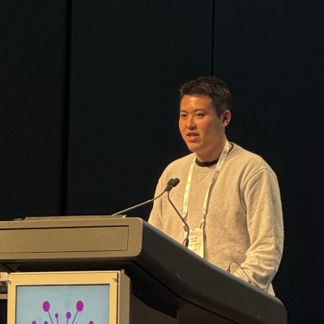
Dr Tommy (Zheng) Gong postdoc, P4S
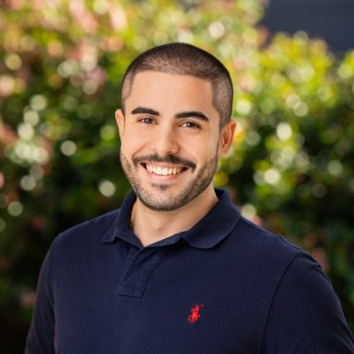
Dr Sebastian Garcia-Daga postdoc, JBEI
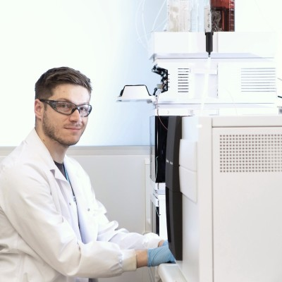
Dr Matthew Briggs senior postdoc, Engineering Plants to Replace Fossil Carbon
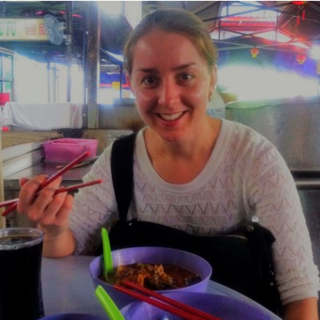
Dr Juanita Lauer postdoc (part-time), AEA Ignite Duckweed Biofuels
Technical Staff
Wendy Sullivan P4S; joint appointment with Tyerman Lab
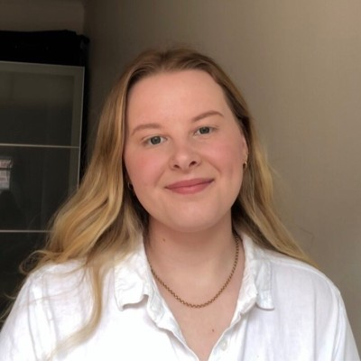
Charlotte Bampton P4S; part-time
PhD Students
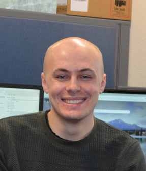
Ryan Edwards Co-supervisor Prof. Matt Tucker; P4S
Jonathan Diab Co-supervisor Prof. Matthew Gilliham; P4S and IDTC Biomanufacturing
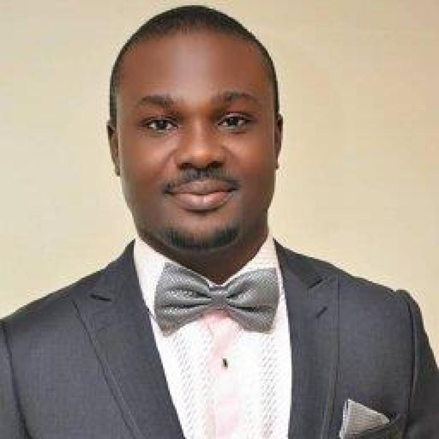
Chigozie Ofoedu Co-supervisors Dr James Cowley and Dr Hayriye Bozkurt; P4S
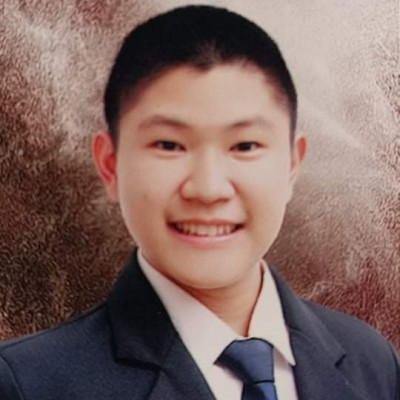
Xiao Yu (Josh) Ng Co-supervisor Prof. Matt Tucker; P4S
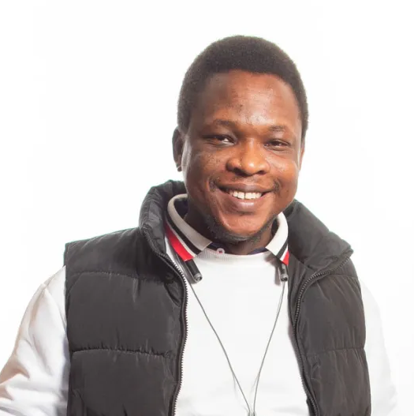
Olalekan Amoo Co-supervisors Prof. Chris Preston, Dr Jenna Malone; Future Crops / Longreach Plant Breeders with Scott Sydenham
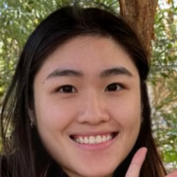
Xingyi (Raven) Zhou Co-supervisor Dr Sebastian Garcia-Daga; JBEI
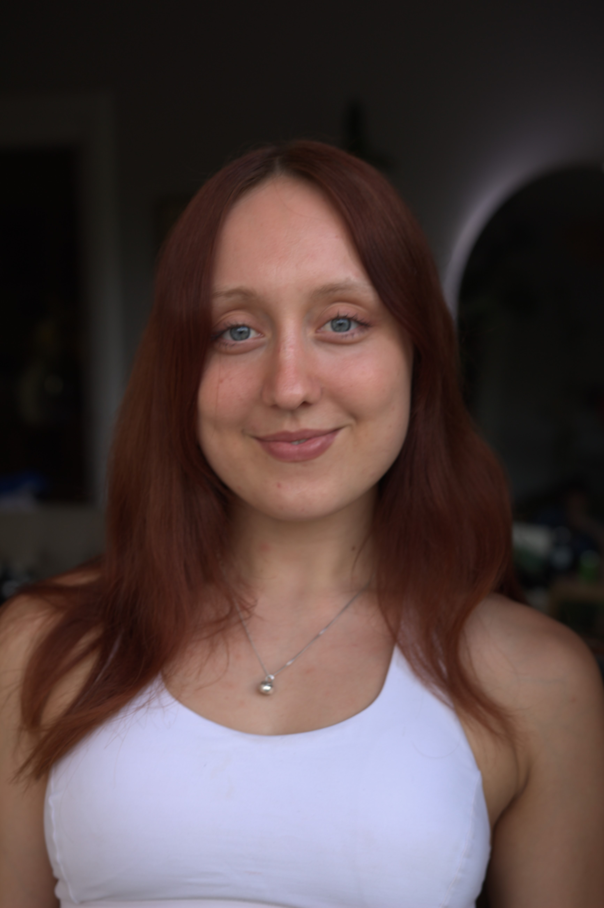
Cadell Canute Co-supervisor A/Prof. Chris Ford; P4S
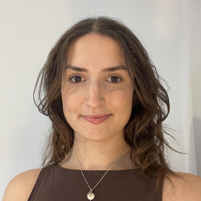
Bryony Hodge Co-supervisors Prof. Matt Gilliham and Dr Alison Gill; P4S
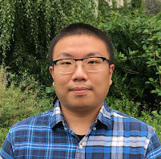
Tommy Chak Chung Kuo Co-supervisor Prof. Matt Gilliham; P4S
Masters and Honours Students
Oliver Gomme MRes (started 2026); primary supervisor Prof. Matt Gilliham, co-supervisor Prof. Ivan Kempson
Undergraduate Students and Visitors
Siwen Gu AU Honours in Biotechnology; co-supervisor Dr Tommy (Zheng) Gong — undergraduate summer research scholar, returning semester 1 as undergraduate researcher
Co-supervised Students
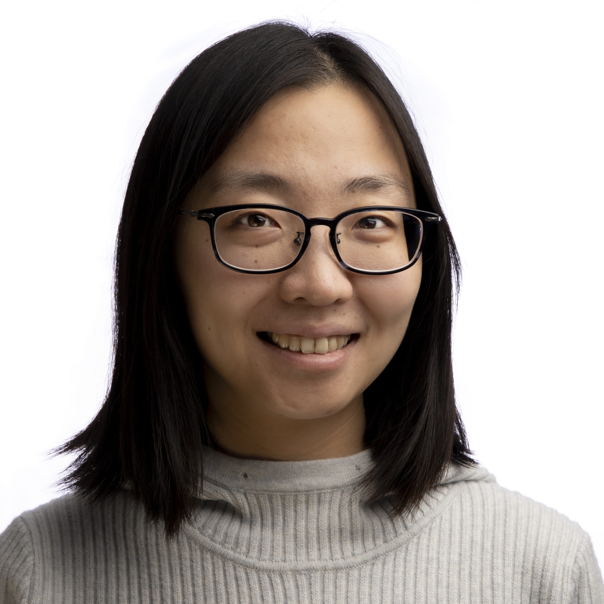
Wenwen (Maddy) Jiang Part-time PhD; primary supervisor Prof. Kerry Wilkinson, co-supervisor Dr Mango Parker
Ryan McClean PhD candidate; primary supervisor Dr Tatiana Soares da Costa
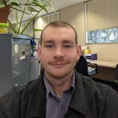
Matthew Morgan PhD candidate, P4S and IDTC in Biomanufacturing with Vertical Future; primary supervisor Prof. Matthew Gilliham
Robert Rintoul PhD candidate, joint University of Nottingham program; primary supervisors Profs. Erik Murchie and Matt Gilliham
Muhammed Nadeem PhD candidate; primary supervisor Prof. Rachel Burton
Former Lab Members
… and where they went next.
- Anxing (Andy) Zhang — Masters, Food Science; now a PhD student at AU.
- Yujia (Cora) Liu — Masters, Food Science; returned to China for an industry position.
- Marie Juret — visiting Masters student; returned to Polytech Clermont, France.
- Dr Adrienne Piechatzek — postdoc, iLAUNCH; now leading the AEA Ignite project at AU with Prof. Matt Gilliham.
- Levi McKenzie — Honours student.
- Dr Fleur Dolman — postdoc.
- Natalie Yui Yee Chan — Honours student, P4S; now a PhD student, ANU/CSIRO.
- Chaudhry Artemiy Razovich (Art) Hussnain — undergraduate researcher; now an MPhil student, Soares da Costa lab, University of Adelaide.
- Dr Yuan Zhang — postdoc, JBEI; now a project manager at GenScript, NJ, USA.
- Dr Hsiao-Han Lin — postdoc, mCAFEs; now a Scientist at Switch Bioworks, CA, USA.
- Dr Yu Gao — postdoc, JBEI; now a Research Scientist at Origin Materials, CA, USA.
- Dr Daniel McKay — Walter-Benjamin Fellow (DFG), Karin Schumacher Lab, University of Heidelberg, Germany.
- Ms Sannidhi Mennon — RA, mCAFEs; now a graduate student at U. Wisconsin-Madison, USA.
- Mr Nick Downs — RA, JBEI.
- Dr Destiny Davis — postdoc, LDRD; now an AAAS fellow at the US Botanic Gardens, Washington DC, USA.
- Dr Xiaoxian Liu — postdoc, JBEI; now a Bioinformatician Staff Scientist II, Moffitt Cancer Center, FL, USA.
- Dr Rebecca Dewhirst — postdoc (joint with Kolby Jardine); now a Research Scientist at Living Carbon, CA, USA.
- Dr Tallyta Silva — Senior Research Associate, JBEI; now a postdoc at Federal University of Lavras, Brazil.
- Dr Kavitha Satish Kumar — postdoc.
- Dr Wenjia Wang — postdoc; now a Scientific Editor at Molecular Plant and Plant Communications, Shanghai, China.
- Dr Cinta Gomez Silvan — postdoc (joint with Dr Gary Andersen on the EcoPOD project); now a Scientist III, Molecular Biology R&D, Thermo Fisher Scientific, CA, USA.
- Dr Ramana Pidatala — Senior Research Associate, LBNL; now a Principal Research Associate at LBNL in the Gladden group, CA, USA.
- Eliot Magnin — visiting Masters student; returned to Polytech Clermont-Ferrand, France.
- Robin Herbert — Research Assistant (jointly supervised by Aindrila Mukhopadhyay); now a graduate student at UC Berkeley in the Deutschbauer lab, CA, USA.
- Sophie Tran — UC Berkeley Student Assistant; graduated 2018, joined Seqmatic, CA, USA.
- Jade Pezard — visiting Masters student; returned to AgroParisTech, France.
- Pablo Bouchez — visiting Masters student; returned to Polytech Clermont-Ferrand, France.
- Dr Lin Fang — postdoc; now an Assistant Professor at the CAS South China Botanical Gardens, Guangzhou, China.
- Dr Beibei Jing — postdoc; now at the City College of San Francisco.
- Dr Julien Sechet — postdoc; became an Agreenskills Fellow at the Institut Jean-Pierre Bourgin, Versailles, and is now CSO at Alkion BioInnovations, France.
- Marianne Colomes — visiting Masters student; logistical engineer, Nutribio, Paris, France.
- Soe Htwe — Research Associate; now an RA at Resilience Industries, San Francisco (and a budding pastry chef!).
- Jeemeng Lao — Research Associate; now a grad student at the University of Southern California, LA.
- Emilie Rennie — LSRF fellow; now at Callisto Media, Berkeley, CA.
- Dominik Bodi — Biotech Partners high-school intern.
- Malgorzata (Gosia) Murawska — Masters student / RA; now a graduate student at the University of Basel with Prof. Dennis Gillingham.
- Fekadu Anderbehan — part-time Research Assistant.
- Vy Ngo — UC Berkeley Student Assistant; Junior Specialist in the Schaffer Lab, UCB; now a Research Associate at Zymergen, Emeryville, CA.
- Dr Thea Pick — DFG Research Fellow; postdoc in the Weber group, Heinrich Heine University, Düsseldorf, Germany.
- Dr Amir Mahboubi — postdoc; now a postdoc at the Umeå Plant Science Centre, Sweden.